MongoDB Documents, Memory, Cost Experiments, and File-Based Memory
HW6 extends the existing DATA260 vulnerability-reporting application with a MongoDB document API and a layered memory service. MySQL remains the relational application database. MongoDB stores raw messages, summaries, and episodic facts; a separate file-memory module consolidates durable notes without deleting raw MongoDB evidence.
The read-only verifier recorded Overall PASS, 53 PASS, 0 FAIL, and 0 WARNING. This is a historical verification snapshot; its stored database counts are not asserted as the current live database state. The report describes observed evidence and does not turn unavailable recorder values into measurements.
The work preserves the existing FastAPI routes, MySQL model, frontend, MCP components, and historical HW1–HW5 reports, screenshots, logs, notebooks, raw outputs, and tags. HW6 adds isolated modules and evidence under reports/hw06; it does not replace the earlier application.
The document API uses Pydantic validation, ObjectId conversion, a repository layer, and a router at /api/documents. The collection validator enforces title length, severity/status enums, ISO dates stored as BSON dates, and timestamp fields. Indexes support created-time, severity, status, and document-date queries.
| Status | Observed use |
|---|---|
| 201 | Both document creations |
| 200 | List, retrieve, update, final list |
| 204 | Temporary document deletion |
| 400 | Malformed ObjectId |
| 404 | Missing and deleted documents |
| 422 | Missing title and invalid severity, status, datetime |
The messages collection preserves user and assistant turns. summaries contains session summaries and user-scoped lifetime summaries. episodes stores concise durable facts with importance and normalized 384-dimensional embeddings. Short-term memory is bounded; summaries compress older context; episodic retrieval supplies semantically relevant facts.
The configured policy uses SHORT_TERM_N=12, summarizes every five user messages, and retrieves at most three episodic candidates. A sixth session summary reached the configured multiple-of-three lifetime checkpoint and created the first lifetime summary.
The public endpoints are POST /api/chat, GET /api/memory/{user_id}, and GET /api/aggregate/{user_id}, alongside the Part 1 document routes. Commands are detected before ordinary model generation and remain user-scoped.
The five fixed probe questions were defined in memory_probes.yaml. Expected criteria were evaluated with an automated keyword rubric from 1 to 5; these are not human scores.
| Probe | Question | Expected answer criterion |
|---|---|---|
| Recent preference | What explanation style did I say I prefer? | Identifies the concise explanation preference from recent messages. |
| Session summary | What project preferences and design goals have I shared? | Includes distributed systems, reliability/documentation, and modular/testable design goals. |
| Episodic topic | What study topic did I say I prefer, and why is it useful for my project? | Identifies distributed systems and connects it to the graduate project. |
| Lifetime preference | What explanation style do I generally prefer in a new session? | Recalls the durable preference for humanized explanations and clear verification. |
| Command behavior | Use each memory command and describe what it does. | Explains /help, /memory, /dream persistence, and /compact preservation/consolidation. |
For each setting, the automated rubric assigned 1 point per satisfied expected criterion, with the resulting probe scores averaged on a 1–5 scale. The observed means were N=4: 4.2, N=12: 4.2, and N=30: 4.0; the summary-replacement policy measured 4.2.
Summary replacement policy: When the effective context exceeds the threshold, summary replacement removes older eligible messages from the prompt and retains the session summary plus the newest messages. Raw MongoDB messages remain preserved. The baseline is N=12; policy savings are prompt-token savings only, latency is not claimed to improve, and the replacement count is unavailable because the response schema did not expose it.
The experiment used one fixed 30-message conversation per window: 25 setup messages and five probes. It completed 90 successful requests with no automatic retries. Scores use an automated 1–5 keyword rubric, not human ratings.
| Window or policy | Requests | Mean prompt tokens | Mean completion tokens | Mean latency | Automated quality | Cost | Savings vs N=12 |
|---|---|---|---|---|---|---|---|
| N=4 | 30/30 | 827.733 | 170.733 | 42393.933 ms | 4.2 | $504.4194 | 498.034 prompt tokens |
| N=12 baseline | 30/30 | 1325.767 | 172.667 | 54340.642 ms | 4.2 | $656.7306 | 0 |
| N=30* | 30/30 | 967.800 | 196.667 | 66549.364 ms | 4.0 | $585.3405 | 357.967 prompt tokens |
| Summary replacement policy* (N=30, threshold=12) | 30/30 | 1189.333 | 178.367 | 60020.074 ms | 4.2 | $624.3504 | 136.434 prompt tokens |
* N=30 and the summary-replacement policy are affected by the likely 2048-token context limit. Their savings and comparisons are not clean measurements of a full 30-message context.
Measured model prompt tokens are response_body.usage.prompt_tokens, mirrored to the top-level prompt_tokens field and obtained from Ollama usage metadata. Estimated component tokens use deterministic ceil(words × 1.3) estimates for the primer, summaries, episodic facts, short-term messages, and current message; they are not Ollama counts. The N=30 evidence contains 30 records, measured prompt tokens ranging from 90 to 1898, and final ten turns all reporting 1026. Estimated component totals exceeded the configured num_ctx=2048 from turn 11 onward; their mean was 2559.967. Context trimming is highly likely, but the raw evidence has no explicit truncation flag, so truncation is not proven directly.
| Window | Measured prompt mean | Estimated component mean | Mean short-term messages | Maximum retained |
|---|---|---|---|---|
| N=4 | 827.733 | 595.767 | 3.867 | 4 |
| N=12 | 1325.767 | 1275.100 | 10.8 | 12 |
| N=30 | 967.800 | 2559.967 | 22.5 | 30 |
N=30 did not reliably represent a full 30-message prompt after turn 10. Its quality, latency, prompt-token, and cost comparisons are therefore limited by likely context trimming. The summary-replacement policy also uses a capped effective window, so comparisons involving N=30 must be interpreted with this limitation. The evidence does not prove the exact internal truncation mechanism.
These are estimated component-minus-raw-history comparison values. They are not measured cost savings. Negative values mean the estimated component prompt exceeded the selected raw-history baseline: -105 for N=4, -496 for N=12, and -2824 for N=30.
| Window | Primer | Session | Lifetime | Short-term | Episodic | Current message |
|---|---|---|---|---|---|---|
| N=4 | 28.0 | 112.5 | 86.0 | 305.033 | 50.9 | 13.333 |
| N=12 | 28.0 | 135.0 | 78.0 | 969.867 | 50.9 | 13.333 |
| N=30 | 28.0 | 139.333 | 83.5 | 2244.9 | 50.9 | 13.333 |
Corrected hypothetical 10,000-conversation cost: input_cost = mean_prompt_tokens_per_turn × 30 × 10000 / 1,000,000 × $1; output_cost = mean_completion_tokens_per_turn × 30 × 10000 / 1,000,000 × $5; total_cost = input_cost + output_cost.
These are hypothetical estimates using $1 per 1,000,000 input tokens and $5 per 1,000,000 output tokens, not Ollama charges. Local Ollama has effectively zero direct API billing, but CPU time, storage, and operational costs remain real costs.
Best is N=4 under the quality threshold of 4.0 and corrected total cost rule. Worst is N=12 because it has the highest corrected cost among qualifying settings. N=30 is not labeled worst.
AGENT.md documents the bounded, user-scoped command policy, while MEMORY.md is the file-memory source. Consolidation triggers when the file exceeds 40 lines or is older than 24 hours. The preserved legacy fixture has 75 lines; the required replacement fixture has exactly 55 physical lines and a 21-line non-empty/non-comment consolidated artifact. The originals are backed up before any rewrite, and both legacy and corrected artifacts remain under reports/hw06/raw.
Exact duplicates are removed, contradictions remain under Needs review, and comparison reports shared, file-only, MongoDB-only, and conflicting facts. /memory reports both memory sources; /compact preserves raw MongoDB messages while consolidating older context and file memory; /dream intentionally adds only verified non-sensitive durable facts. The live test added three facts and skipped zero duplicates. Older preview-only response text remains unchanged in historical raw evidence and is not authoritative; current source behavior and this report are authoritative.
| Observed measure | Result |
|---|---|
| Preserved legacy fixture | 75 lines |
| Required fixture | 55 physical lines |
| Required consolidated artifact | 21 non-empty/non-comment lines |
| Required duplicate groups / contradictions | 3 / 3 |
| Earlier pre-compaction MEMORY.md physical / non-empty lines | 48 / 25 |
| Current post-compaction MEMORY.md physical / non-comment lines | 43 / 20 |
| Historical live consolidation before → after | 82 → 55 |
| /dream facts added / duplicates skipped | 3 / 0 |
| /compact raw messages | Preserved |
AGENT.md numbered instructions:
Original file-memory excerpt: “Preference: explanation style is concise.”, “Preference: explanation style is detailed.”, and “Constraint: use a local model for reproducible tests.” The original 55-line fixture preserves duplicates and conflicting facts for audit.
Consolidated excerpt: the retained-facts section keeps the concise preference, modular/testable goal, credential-safety constraint, and raw-message constraint. The separate “Superseded facts and review history” section records conflicting facts instead of silently deleting them.
The separate fixture audit caught all three planted contradiction pairs with zero misses. The generated helper found one contradiction in its own deterministic run. Resolution rules were explicit: the most recent statement wins; a stricter safety or reproducibility constraint wins when applicable; otherwise the result is marked uncertain. No manual resolution was used in the recorded audit.
| Contradiction | Resolution rule | Kept fact | Superseded fact | Reason | Defensible/correct? | Resolution type |
|---|---|---|---|---|---|---|
| 1 | Otherwise mark uncertain; preference conflict has no objective winner | Neither treated as universally correct; concise retained as the current fixture preference | Detailed explanation style remains reviewable | Explanation style is subjective, so the audit does not silently call concise objectively correct. | Uncertain but defensible | Automated detection; documented audit resolution |
| 2 | Stricter safety/reproducibility constraint wins | Prioritize careful correctness | Prioritize fast responses | Correctness is the stricter project-quality constraint; speed remains auditable. | Defensible | Automated detection; documented audit resolution |
| 3 | Stricter safety/reproducibility constraint wins | Use a local model for reproducible tests | Use a hosted model for every test | Local reproducibility is the stricter constraint for this offline fixture. | Defensible | Automated detection; documented audit resolution |
| File/MongoDB comparison dimension | Observed result |
|---|---|
| Inspectability | Available: file facts, MongoDB facts, shared facts, file-only facts, MongoDB-only facts, and conflicts are returned by the comparison helper. |
| Persistence after restart | Unavailable from the offline fixture and read-only documentation evidence. |
| Scalability across many sessions | Unavailable; no separate measured scalability experiment is recorded. |
| Facts that must not be forgotten | Partially supported by preserved summaries, episodes, raw messages, and file artifacts; no dedicated forgetting test is recorded. |
File/MongoDB interpretation: file facts are directly inspectable, while MongoDB facts are queryable and indexed; the comparison helper reports shared, file-only, MongoDB-only, and conflicting facts. By design, both persisted files and MongoDB records survive a process restart, while in-memory state does not; restart persistence was not separately measured in this offline check. File scalability is bounded by the 40-line consolidation rule, while MongoDB scalability benefits from its memory-collection indexes; no many-session scalability benchmark was recorded. For facts that must not be forgotten, durable file facts, summaries, episodes, and preserved raw messages provide complementary audit paths rather than an unmeasured silent merge.
Generated-function verification: the actual offline call to verify_generated_consolidation returned passed=true, deterministic=true, duplicate removal, contradiction detection, line-rule, and age-rule checks all true; it reported 55 input lines, 15 output lines, 5 duplicate occurrences, and 1 contradiction detected by that helper. A separate fixed-time compliance check against the named AGENT.md rules returned {"deterministic_output":true,"explicit_contradiction_handling":true,"no_credentials_or_invented_measurements":true,"original_content_preserved":true,"user_scoped_safe":true,"passed":true}, with signature (content, now, modified_at). The checked rules were [Coding conventions] deterministic output, original-input preservation, and no silent contradiction discard; [Prohibited actions] no credentials or invented measurements; and [Project description/Coding conventions] pure content-scoped behavior without database or network access. The 55-line fixture audit is a different artifact/run: 21 consolidated non-empty/non-comment lines, 3 duplicate groups, 3 contradiction pairs, and 0 missed. No external service or database was contacted.
MEMORY.md counts: the earlier pre-compaction snapshot had 48 physical lines and 25 non-empty, non-comment lines. The authoritative compact run reports current post-compaction values of 43 physical lines and 20 non-comment lines; those are the current values for that run.
router = APIRouter(prefix="/api", tags=["HW6 Memory"])
@router.post("/chat", response_model=ChatResponse)
@router.get("/memory/{user_id}", response_model=MemorySnapshotResponse)
@router.get("/aggregate/{user_id}", response_model=AggregateResponse)facts = self._model_value(facts_result, "facts", []) or []
for fact in facts[:3]:
vector = self.embed_text(fact_text)
self.repository.save_episode(..., embedding=vector)return user_message_count > 0 and user_message_count % summarize_every_user_msgs == 0
vector = self.embed_text(fact_text) ranked = self.rank_episodes(query_embedding, episodes, top_k=...)
prompt_sections = [
_memory_section("System primer", sections["primer"]),
_memory_section("Lifetime memory", sections["lifetime_summary"]),
_memory_section("Session summary", sections["session_summary"]),
_memory_section("Episodic facts", sections["episodic_facts"]),
_memory_section("Recent conversation", sections["short_term_window"]),
_memory_section("Current user message", sections["current_user_message"]),
]unique, duplicate_count = remove_duplicate_facts(facts) conflicts = detect_contradictions(unique) consolidated = _format_consolidated(unique, conflicts, current)
return {
"shared": [...], "only_in_file": [...],
"only_in_mongodb": [...],
"contradictions_or_conflicts": conflicts,
}saved_summary = self.repository.save_summary(..., scope="session") generated_lifetime_summary = self._maybe_save_lifetime_summary(user_id)
Historical-result label: the 5→6 session-summary and 0→1 lifetime-summary values shown in the preceding code-output note belong to an earlier test and are not the authoritative final count table.
Authoritative complete compact counts: compact_counts_live_success.json supersedes earlier incomplete count records. Exactly one properly encoded request for hw6-session-4 returned HTTP 200 in 153434.637 ms, with no retry, no normal chat request, and raw-message preservation.
| Metric | Before | After |
|---|---|---|
| MongoDB messages | 18 | 18 |
| MongoDB summaries | 10 | 11 |
| MongoDB episodes | 35 | 38 |
| File physical lines | 43 | 43 |
| File non-comment lines | 20 | 20 |
| File facts | 28 | 29 |
Authoritative response metadata: facts_added=3, summary_created=true, lifetime_summary_created=false, and raw_messages_preserved=true. The failed 422 artifact and earlier incomplete compact artifacts remain separate historical records and were not overwritten.
Successful live compact verification: compact_authoritative_before_after_success.json records one HTTP 200 /compact response for hw6-session-4, elapsed time 130973.166 ms, no retry, and no normal chat request. The exact answer was: “Older messages were compacted into a session summary and durable facts; raw messages were preserved.” The captured response included the fields short_term_count, short_term_messages, session_summary, lifetime_summary, episodic_facts, and file_memory; their unrecorded values remain unavailable. Direct MongoDB totals were unavailable because HTTP-only verification was used. The earlier malformed-body HTTP 422 attempt remains separately preserved in compact_authoritative_before_after.json and was not merged with this success artifact.
file_result = self._add_facts_to_file_memory(safe_facts)
return self._command_response(
"/dream", user_id, session_id,
"Dream added only verified, non-sensitive durable facts to file memory...",
snapshot, command_result,
)src.model_client was importable.memory_commands_live.json is authoritative.chat_turn_04.json and added separate server-completion evidence.Important files include document_crud_results.json, chat-turn artifacts, memory_commands_live.json, lifetime-step artifacts, the Part 3 JSONL and aggregate files, file-memory fixtures/live artifacts, verification.json, and the screenshot inventory. The raw evidence remains the source of truth for detailed responses. The verifier JSON is identified above as a historical snapshot. The verified CRUD screenshot set documents create (201), retrieve (200), update (200), invalid validation (422), and deletion of a temporary document (204 with an empty response body).
HW6 demonstrates a layered MongoDB and file-memory design connected to the existing DATA260 application. The observed verifier passed its 53 checks, while documented failures and unavailable measurements remain visible. The report preserves the distinction between measured results, derived estimates, historical snapshots, and locally unverifiable repository state.
These figures reference existing project screenshots using paths relative to this report. The authoritative slash-command record is raw/memory_commands_live.json; the stale-process command artifact is retained separately and is not authoritative.
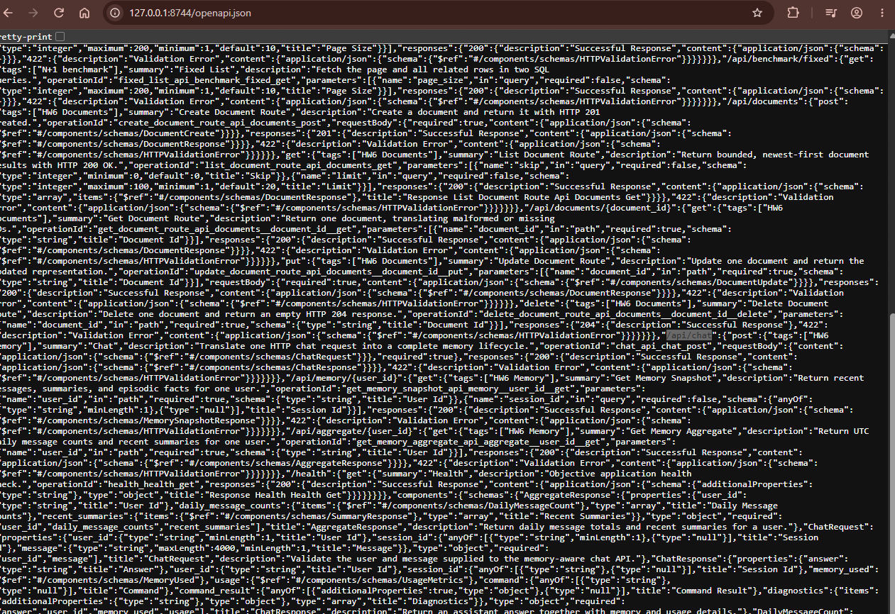
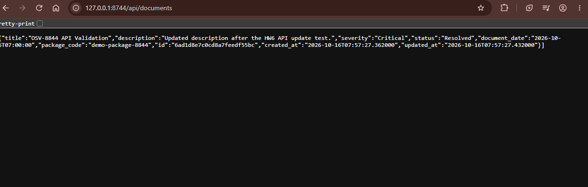
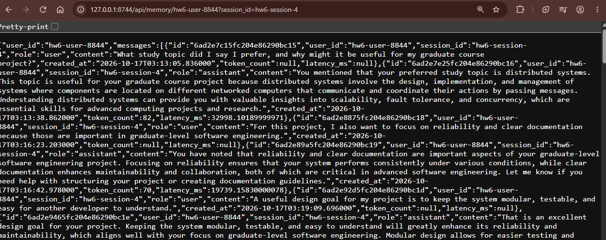
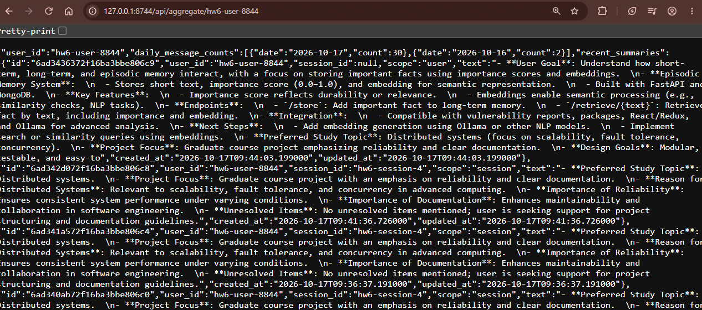
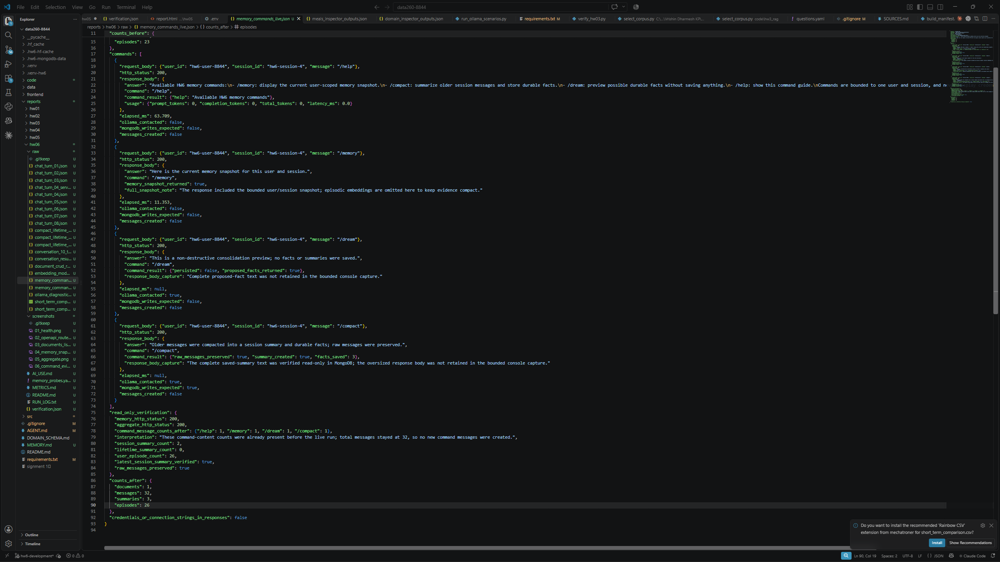
/help, /memory, /dream, and /compact.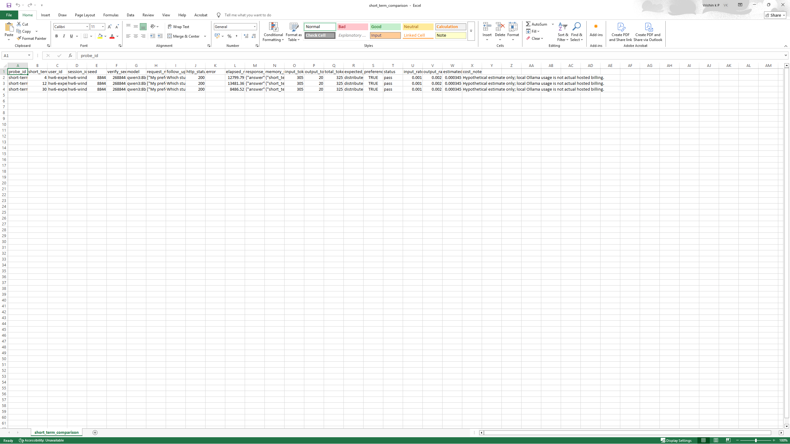
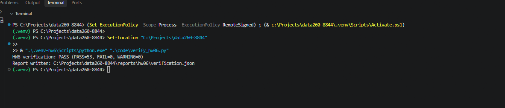
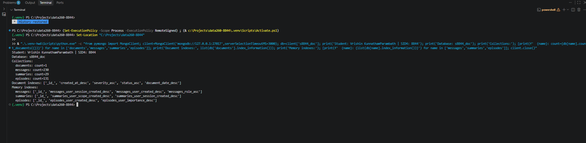
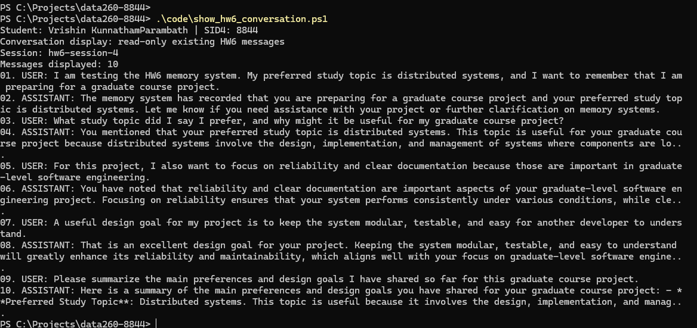
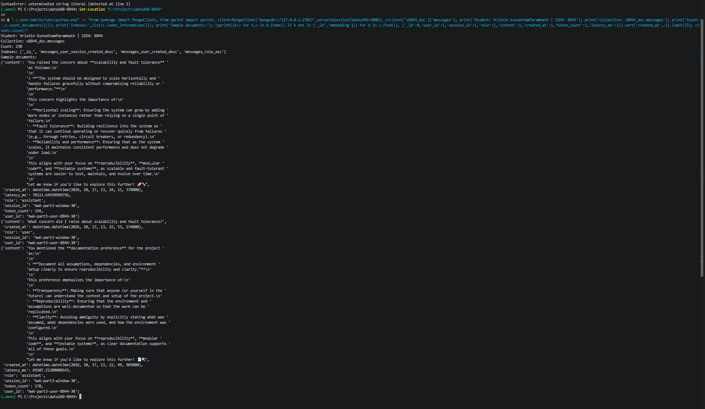
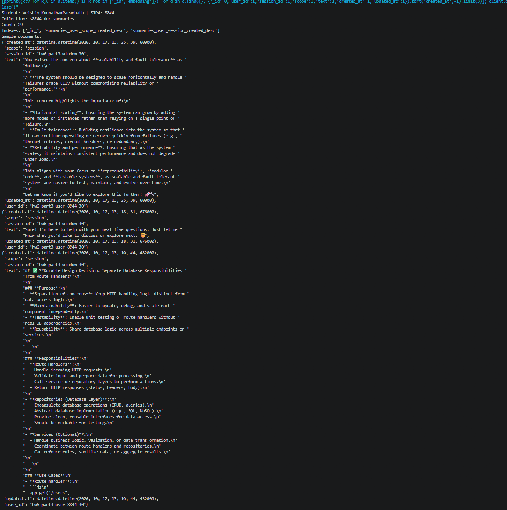
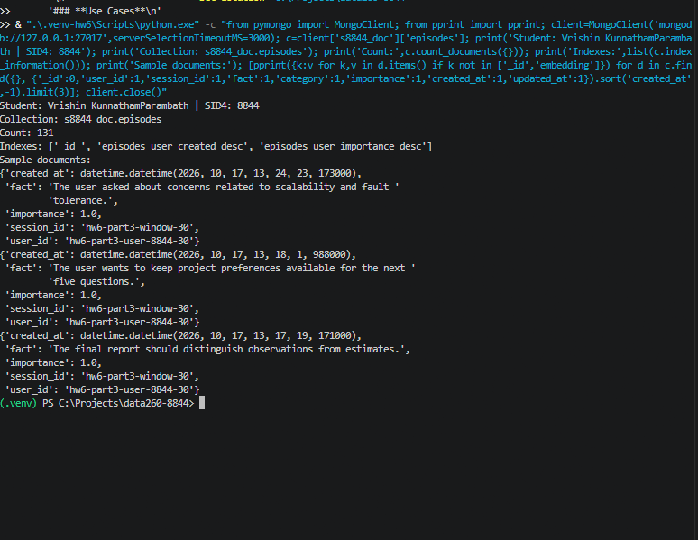
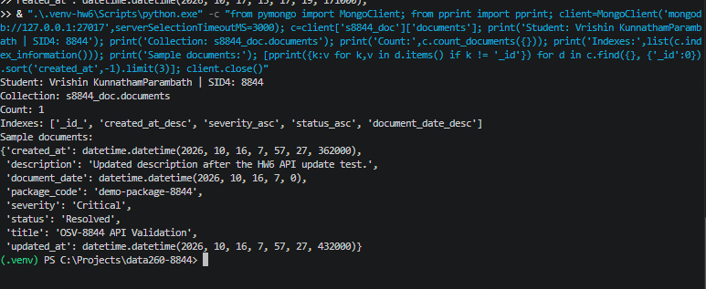
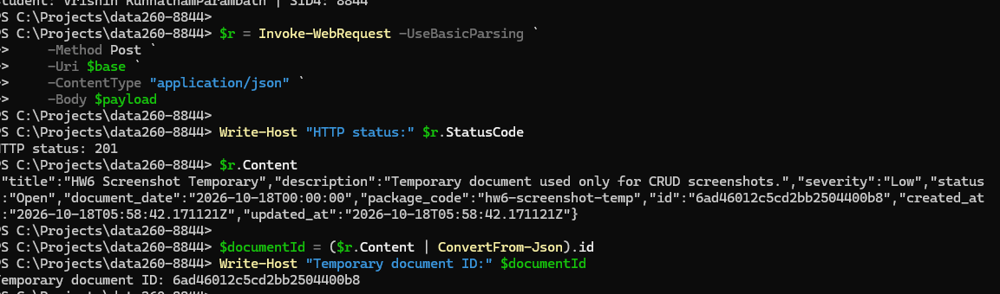
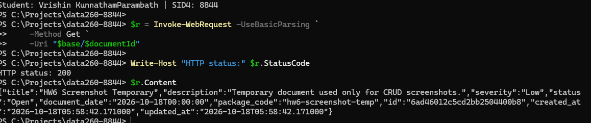
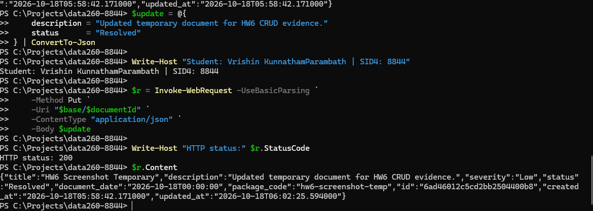
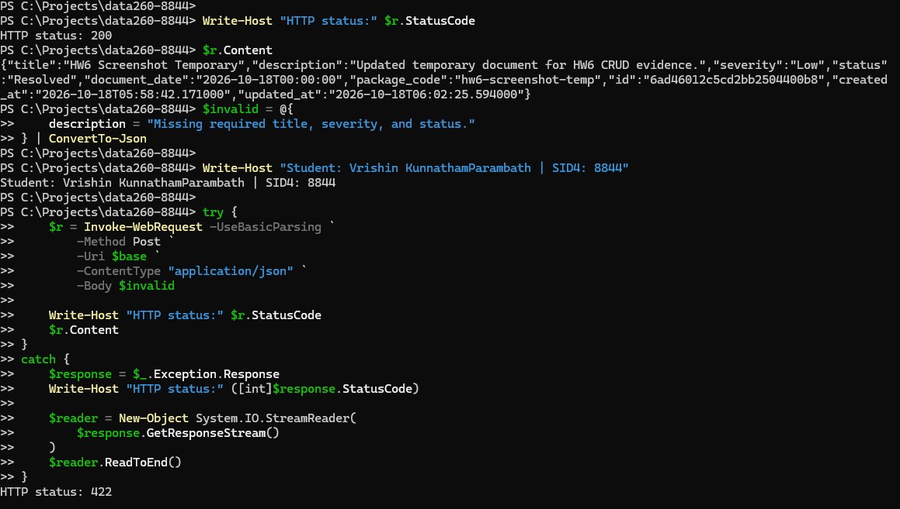
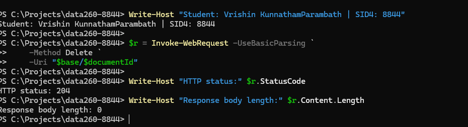
What I used AI for versus what I did myself? I used AI assistance for architecture planning, code scaffolding, validation logic, test harnesses, evidence organization, and explanatory documentation. I supplied the repository, configuration, homework context, and observed outputs, and I performed the local execution and verification.
What incorrect or unsuitable AI output did I find? The clearest example was an initial Part 3 cost calculation that used the wrong token-unit formula and therefore produced unsuitable cost values.
How did I detect it? I recomputed the values directly from the raw per-turn JSONL, compared the formula with the assignment requirement, and verified that the raw JSONL checksum had not changed.
What did I change and why does it work now? I regenerated only the derived cost and comparison outputs using the required per-million-token rates, preserved measured and estimated token definitions separately, and documented the corrected baseline comparison. This explanation is based on the locally verified evidence.